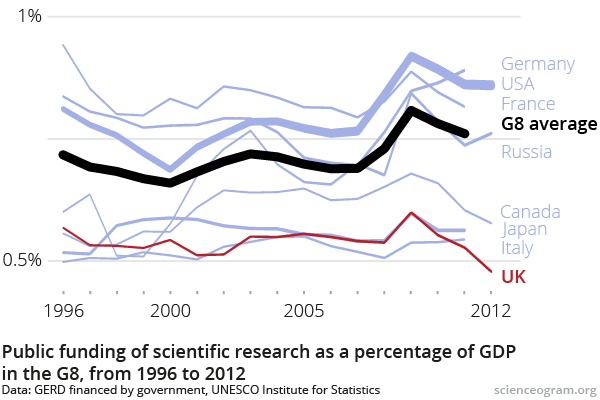
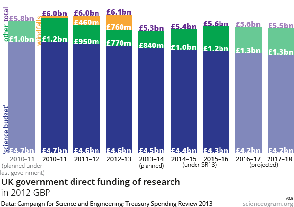

Following every financial crisis in human history there have always been scientists who suffer and those who benefit, Coronavirus will be no exception. As scientists, we are very good at adapting to new challenges and responding to new external research that may move our research into a new direction. The magnitude of change seen in society within the last 8-10 weeks has been enormous and has forced many scientists to take a good long hard look at their current careers and their future. I myself have been asking the question - where will my research move towards in the future?
I have been unlucky enough to have experienced two major world financial crashes during my scientific career. I began my PhD in 2008/2009, just as the first financial crash was starting to take hold. Despite the world going through an incredibly tough time, I was largely protected during that crisis because of my regular student stipend. However, having more responsibilities during the current Coronavirus crisis has made me realise just how less protected I am now.
The financial implications of the 2008 financial crisis on science was seen gradually over a few years. This gave scientists a sufficient length of time to react and make decisions about their scientific research. While financial crashes are challenging for all, the relative slow pace of the 2008 crash allowed academic scientists to make informed decisions about their career choices. As a consequence, I saw many friends and colleagues leave academic science to pursue careers in industry (Im not saying this is a bad thing. The brain drain was only bad for academia). Industry was seen as more stable than academia because funding decisions in industry are usually made over a >5 year cycle and therefore jobs are more secure (i.e. permanent contracts).
The current crisis
That was then. Fast forward to the current Coronavirus crisis and the financial situation this time around seems incredibly different. I am lucky that I have a contract that extends until after 2021 so I am personally not acutely affected by the short-term effects of this crisis. However, this will undoubtedly have an effect on my future career in science, as it will on all scientists. This is because I am required to attract scientific funding to support my research. As an early career scientist, this year I have been working incredibly hard to move my scientific career forwards. Specifically, trying to attract grant funding so that I can move towards full “scientific independence”. Thankfully, im grateful that I have been relatively successful so far.
For those who don’t know, basic scientific medical research is largely supported by charities. These charities include the likes of major players such as the Cancer Research UK, The British Heart Foundation and Wellcome, in addition to smaller charities such as the Bone Cancer Research Trust and Brain Tumour Charity, just to name a few. The income for these charities is largely from donations, event fundraising activities and income from endowments. If you look at the financial income from the CRUK in 2017/2018 you can see that the majority of their income is from donations, events and trading, all of which have been significantly impacted during the current crisis.
 - CRUK income 2017/2018
- CRUK income 2017/2018
The short-term implications of Coronavirus
This has meant that CRUK (and by the sounds of it all other research orientated charities) has had to cut back on its current financial commitments just to stay afloat. The impact of the Coronavirus crisis was immediate, within 3 weeks of the government initiating lockdown I received an email from the CRUK stating that two pending grants have had their decisions deferred until September. The email came with the caveat that the CRUK will need to re-evaluate its financial position in the future. Something that should worry us all. However, this wasn’t a shock to me because I was expecting that the Coronavirus would have some financial implications for charities, but what did shock me was the speed at which they reacted. I naively though that it would follow a slow predictable wind down of expenditure, similar to the one that took place during the 2008 financial crisis. However, it seems charities were more acutely affected by this crisis than other sector because their income stream was cut dead by lockdown.
The main problem that the charities have had to deal with is the warp speed this crisis has occurred at. The financial crash didn’t happen over a period of months (like in 2008) it happened over a period of 23-24 days. This is unprecedented in every sense of the word. The immediate effect of this cliff edge crash and the resulting world-wide lockdown has meant that charities have their income streams slashed. For example, the BRCT which is a relatively small charity is expecting to face a shortfall of £680,000 ( please donate here if you can as they do great work ). This has obviously had a considerable knock-on effect on scientists who are now considering how they best support their research groups.
The long-term implications of Coronavirus
Because of the unprecedented nature of this crisis, the long-term effects are very difficult to predict, but I would like to provide a personal opinion on what I think is likely to change and be the challenges over the next few months/years/decades. Firstly, some hope, scientific progress is always faster in a time of crisis. Plus, scientists tend to be the most resourceful of people. For example, look at the speed at which technological improvements were made during world war II and the cold war. Crises can act as moments for us to reinvent ourselves and adapt our scientific research to new opportunities.
Now for the less positive perspective. Below I discuss four main topics that I think may change as a result of this crisis:
1. Research funding
I said at the beginning of this post that crises create both suffering and benefit. Whether you benefit or suffer will likely be determined by what scientific funding will look like for us in the future.
Funding opportunities that focused on non-infectious diseases such as cancer, heart disease and autoimmunity are likely to be significantly impacted in the short to medium term. Given that the financial recovery is likely to take a long time, this funding reduction is possibly going to be long term too, but we just don’t really know. However, if the Governments decide to support these charities then the impact is likely to be reduced.
I predict that research on technology, machine learning and infectious diseases is likely to be the beneficiary from this crisis. This is mainly because technological advances have always been seen as ways out of a crisis, as they provide both health and societal benefits (Manufacturing, jobs e.c.t). Increased research on infections disease is obvious going to be a priority for all governments in the near future. Government’s will now be looking for science to deliver the new medicines and vaccines to prevent or alleviate any future pandemic.
2. Government supported science
When the pandemic is over, the big question will be - “will the UK government reduce or increase the amount it funds science?”. The only reliable indication is the 2008 financial crisis. When I went looking for data to help answer this question, I realised that its actually quite a complicated question to answer. This is because it depends on which figures you look at. On one hand, funding compared against GDP did significantly reduce, but this occurred across all major economies. However, it is interesting to note that the UK spends the least amount of money on science of all G8 nations, when compared to GDP. This is quite shocking in itself, but that’s another story.
 source: Scienceogram
On another hand, the government did increase overall spending on science (chart below), but reductions in core scientific funding (blue bar) were made up by increasing the windfall payments (yellow bars).

source: Scienceogram. blue: core funding, green: capital spending, yellow: windfall payments
So if history is anything to go by I would be predicting a reduction in scientific spending. However, this crisis is very different from the last, with a solution out of this Coronavirus crisis being a scientific one. Time will tell.
3. Brain drain?
It is likely academia will also suffer a continued brain drain, with Coronavirus accelerating this pace further. Even before the pandemic a lot of my colleagues had left, were considering or were in the process of leaving academia because of the poor working environment and lack of job security (See these two studies for more info on the mood of researchers in academia: S.Acton 2019 and E Loissel 2019 ). In order to stem this potential brain drain we need to start to think of practical ways in which we can support scientist over a longer term. This includes all staff and all seniorities. Academia has relied on short term contracts for too long, which has been a significant factor for many of my friends leaving the university. This and other issues with the poor working environment need to be addressed. Recently this year, the wellcome trust gave me some hope for change when they initiated the Cafe Culture to discuss some of these issues. We were going to host one of these within our research institute, until Coronavirus got in the way. Hopefully this can be resumed as I think this will be acutely needed when laboratories reopen.
4. Private equity research funding
The crash of the stock market will likely bolster the number of people wanting to invest in private equity in the medium term. Currently, private equity has ground to a standstill and all money currently invested is going to support current investments. However, in the medium term this is likely to reverse as more investors move away from the stock market to private equity as this form of investment is seen as very successful for investors. The effect of this is that there may be more private equity to support university spinout companies. However, this type of funding doesn’t support basic research and will not replace the funding lost from the charitable sector.
How can we mitigate some of these challenges?
Firstly, we need to support our colleagues and look out for the people that work for us. I have gone into survival mode, not for myself, but for the people who I work with. I have spent the past few weeks writing research grants and fellowships to support members of my group, particularly those who are nearing the end of their contracts. However, my time is scarce, the funding opportunities are even scarcer, plus grants are likely to be the most competitive they have ever been. Plus being at an early career puts me at a disadvantage when going against more established and senior scientists. However, my aim is to stay positive and focus on what I can do in this moment. Specifically, working hard, apply for grants and ignore the hurdles.
Final words
The Coronavirus epidemic has shown us how fragile the world is, but it has also shown us what is important in life. We have seen some amazing displays of positive humanity during this crisis (For example, see the note someone left on the bins next to my street below) and collectively we can overcome this virus. This crisis will pass and it will likely lead to significant changes in the way we do science. If we can adapt to the new scientific and funding challenges then we will have a better chance of succeeding in mitigating some of the long term negative consequences of the pandemic.